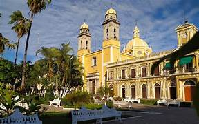
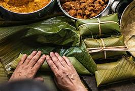
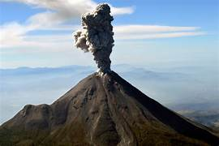

La ciudad de Colima, la capital del estado, cuenta con un encantador centro histórico que conserva su arquitectura colonial. Entre sus atractivos se encuentran la Catedral Basílica Menor de Colima, el Palacio de Gobierno y el Museo Regional de Historia de Colima, que alberga una impresionante colección de arte prehispánico y colonial.

La gastronomía de Colima es variada y deliciosa, con influencias de la cocina mexicana tradicional y los productos locales. Algunos platillos típicos incluyen la sopa de mariscos, el pozole costeño, los tamales colimotes, el pescado zarandeado y los churros de cazuela. Los productos agrícolas como el plátano, el mango y el coco también son ingredientes comunes en la cocina colimense.

También conocido como Volcán de Fuego, el Volcán de Colima es uno de los volcanes más activos de México y ha sido un punto destacado en la geografía de Colima durante milenios. Su imponente presencia domina el horizonte y ofrece vistas espectaculares desde diferentes puntos del estado. Aunque su actividad volcánica puede ser peligrosa en ocasiones, también ha contribuido a la fertilidad de la tierra y al atractivo turístico de la región.

Notas relevantes:
Colima es el único estado de México que tiene forma de herradura.
Ee el estado que
alberga la Reserva de la
Biósfera Manantlán, un área natural protegida con una gran biodiversidad.
Colima es conocido por su
producción de café de alta calidad, considerado uno de los mejores de México.
La música mariachi se originó
en Colima y es considerada Patrimonio Cultural Inmaterial de la Humanidad por la UNESCO.